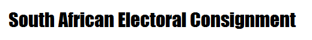
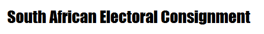
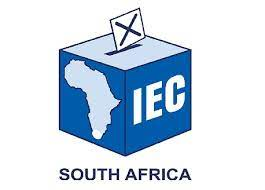

 About Us
The South Africa Electoral Consignment-SAEC
The SAEC is an online voting system that enables users to register and vote online, it can be done by the use of mobile and personal computers. we provide solution to people who are working during election days and don't get the chance to go vote at the voting stations
The users will be able to view the parties that they want to vote for and cast their votes to their parties on the election day
We Hold Election For:
- Nation Election
- Location Election
- Provincal Election
Like and Follow Us
Facebook
Instagram
Twitter